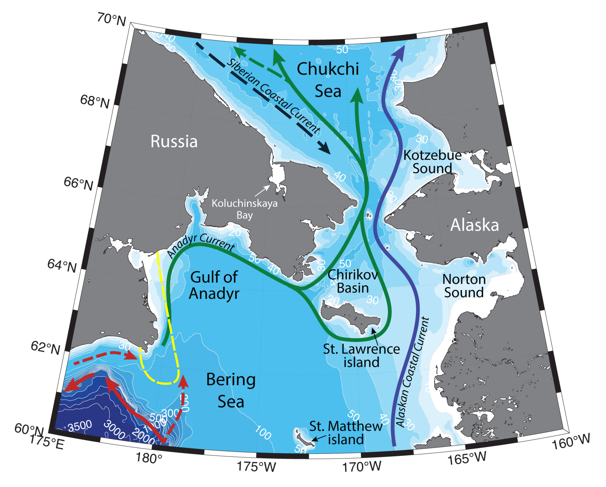

Schematic water circulation patterns and geographical place names in the Northern Bering Sea and Southern Chukchi Sea. Adopted from Pisareva et al. (2015a,b), Pickart et al. (2016), Baker et al. (2020). Dashed line marks the studied region.
Northern Bering Shelf is a key region for Pacific water transformation, before the flow proceeds northwards through the narrow bottle neck of Bering Strait into the Arctic Ocean. Several water masses involved in the northwards flow are known to exist in the region: Anadyr water, Bering Shelf water, Alaskan Coastal water. Hydrography of the region is determined by the characteristics of the inflowing water masses, seasonal sea ice cover, upwellings, etc.
Various studies have previously suggested, that Anadyr Current is a continuation of the Bering Slope Current (BSC), which was thought to turn northwards onto the shelf in the region of Navarin Cape (Coachman et al., 1975; Kinder et al., 1986). Combined O18 isotope and salinity analysis have shown the relation of Anadyr waters both to high salinity Bering Slope Current and to fresh coastal waters (Coachman, Shigaev, 1992) – Anadyr river inflows into the north Bering Sea and supplies around 65 km3/year annually. Later research based on numerical modeling (Clement Kinney et al., 2009) has suggested that BSC is following the bathymetry and doesn’t flow up onto the shelf. It seems, that Anadyr current feeds on the waters from the shelf current, which almost disappear during winter, but have transport of about 1 Sv during summertime (Hu, Wang, 2010).
Anadyr Current is flowing northwards along the coast of Anadyr Gulf. Its mean speed is 15-20 cm/s, which means, that the residence time of the current in the Gulf is about 1 month (Coachman, Shigaev, 1992). In the Chirikov basin current can reach speeds up to 34 cm/s (which makes the residence time of these waters in the Basin about 9 days).
In the region of Anadyr Strait 20-30 % of the Anadyr Current turn around the St. Lawrence Island and proceed northwards through the Shpanberg Strait, while the 70-80% continue through Anadyr Strait (Danielson et al., 2012a). To the south of St. Lawrence Island, the current direction can change from eastern to southern. The flow through Bering, Shpanberg and Anadyr straits is northwards, however the currents often reverse during wintertime. Anadyr Current, as well as its flow through Anadyr Strait are less prone to variability under wind forcing, compared to the flow through Shpanberg and Bering Straits (Aagaard et al., 1985a). During wintertime the current in Bering Strait is 10-20cm/s, in Anadyr Strait – 15-30 cm/s (Muench et al., 1988). Danielson with coauthors (2012b) have modeled and described two modes of circulation in the northern Bering Sea: 0.6 Sv of a northward flow through the Shpanberg Strait and almost 0 Sv in Anadyr Strait under the influence of south-easterly winds and 0.64 Sv of a northward flow through the Anadyr Strait with a southerly transport of 0.5 Sv under the influence of north-westerly winds. Numerical models for 1987-2007 have shown, that 50% of the time mean monthly flow through the Anadyr Strait was greater than through the Bering Strait.
During summertime in the western part of the Chirikov Basin upwellings of Anadyr waters from the near-bottom horizon are common (e.g. Coachman, Shigaev, 1992; Whitledge et al., 1992; Hansell et al., 1989; Nihoul et al., 1993; Stabeno et al., 1999). Wind-driven upwellings have also been observed by St. Lawrence and St. Matthew islands. It has been studied (Saitoh et al., 1998), that northwesterly winds along St. Lawrence and St. Matthew islands drive upwelling at their southern coasts, while southeasterly winds can cause coastal upwelling along their northern coasts. Upwellings of nutrients to the surface cause phytoplankton blooms and boost the productivity of the ecosystem.
Northern part of the Bering Sea is annually ice covered for at least 100 days (Frey et al., 2015). In the Gulf of Anadyr and in the Chirikov Basin ice concentration can be up to 50% in May (Wang et al., 2009). In wintertime under the influence of strong north-easterly winds large polynyas can form along the northern shore of Anadyr Gulf and to the south of St. Lawrence Island and next to St. Matthew Island (Cavalieri, Martin, 1994; Schumacher et al., 1983). Brine rejection in the St. Lawrence Polynya together with nutrient-rich Anadyr Current generate baroclinic currents that positively influence benthic communities (e.g. Grebmeier, Cooper, 1995).